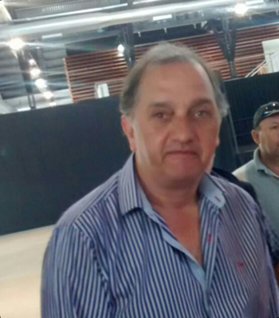

Real Chubut - Agencia de Noticias


BRINDIS CIERRE DE AÑO MUNICIPALIDAD DE COMODORO RIVADAVIA

FOTO REALCHUBUT- INTENDENTE CARLOS LINARES
Se realizó un brindis en el Centro Cultural de la ciudad para dar un cierre simbólico de año del intendente Linares con su gabinete y el resto de empleados municipales , REALCHUBUT estuvo presente y tuvo la oportunidad de conversar con el intendente Carlos Linares, con el vice intendente Juan Pablo Luque y el Concejal Guillermo Almirón (FPV)
REALCHUBUT: Linares, ¿nos puede contar el balance de este año 2016 y el encuentro con los municipales?
INTENDENTE LINARES: - El encuentro bien y el trato con los municipales muy bueno, hay un gran ida y vuelta trabajando, en lo personal ha sido un año bueno y con mucho trabajo, que hemos podido concretar casi todo lo que nos hemos propuesto para el año que se termina. Pero preocupadísimo por el entorno, por la gente, los niveles de la economía nacional, el tema de la provincia, pero vamos a seguir trabajando poniéndole amor, vamos a estar al lado de la gente cuidando sus necesidades como siempre.
RCH: Con respecto al próximo año, 2017, como ve la perspectiva económica, el barril del petróleo paso de 28 dólares a mas de 50 dólares, esperas que se mantenga? que siga creciendo ?
INTENDENTE LINARES : - El año 2017 va a ser malo y va a ser malo mientras este gobierno nacional siga siendo gobierno nacional, a esto debemos acostumbrarnos los argentinos.. El gobierno nacional no gobierna para nosotros, gobierna para pocos, y los pocos son ellos y los que quedamos afuera somos nosotros. Esto quiere decir que nos tenemos que arreglar con lo que tenemos, el petróleo esta en 54 dólares el barril y no alcanza, tiene que superar los 60 dólares porque no alcanza, vamos a tener un año duro y defender los puestos de trabajo pero no hay que olvidarse que vamos a tener un año muy duro.
RCH: - Hay medios internacionales que dicen que el 2017 va a poner a prueba la gobernabilidad del presidente Macri….UD como intendente se ha mostrado como referente regional del sindicalismo organizado en nuestra provincia y también en Santa Cruz, ¿como toma ese liderazgo que casi por circunstancia le ha tocado asumir ?.
INTENDENTE LINARES : - Yo no soy un dirigente , yo soy un militante de la política, soy partidario del proyecto nacional y popular, mi conductora es Cristina Fernández de Kirchner , yo no me siento un dirigente , yo soy un militante y trabajo como militante y hago las cosas con la cabeza de militante.
RCH: - Como dijo alguna vez CFK que “acá no hay ningún líder sino que todos deben estar empoderandose” y tomando esas palabras a UD como militante lo están empoderando para legitimarlo a ser un dirigente ?.
INTENDENTE LINARES: Sin dudas tenemos funciones que cumplir, yo ahora soy el intendente, no me olvido de donde vengo, yo no herede el cargo de intendente a mi me eligió la gente, no tengo jefe ni patrones, no le debo nada a nadie. Yo tomo mis propias decisiones y me parece que el próximo año va a ser un gran paso para delante de la militancia, la militancia tiene que tener voz y vida propia.
RCH: - Algún proyecto para 2017 para Comodoro Rivadavia??
INTENDENTE LINARES: - Vamos a seguir trabajando para la gente, tenemos muchos proyectos de construcción, de trabajo, de modernización del municipio, hay mucha demanda de servicios. . Seguiremos trabajando junto a las ONG que hay muchas y muy buenas en nuestra ciudad. El gran desafío del año 2017 es cuidar el empleo- finalizó el intendente.
REALCHUBUT: - Como lo encuentra este cierre de año ¿?
VICEINTENDENTE LUQUE:- Bien, termina un año duro, el balance del primer año de gestión del intendente ha sido muy positivo. . El próximo año , se perfila complicado , pero nosotros desde el municipio mientras tengamos la ciudad en orden y los empleados municipales que permanentemente son los que motorizan todo el trabajo que la gente nos reclama nos va a ser mas sencillo así que esperamos que sea mejor que este año que termina.
RCH: - ¿Se ha avanzado en algo concreto con los fondos con respecto a las grandes obras que se han anunciado para nuestra ciudad?
LUQUE: - La obra del aeropuerto aparentemente estaría en vías de comenzar, pero falta la obras del puerto, del camino de circunvalación, falta el estadio Centenario, faltan proyectos que Comodoro se merece hace muchísimo tiempo y que pretendemos poder trabajar y lograrlo.
RCH: - ¿Comodoro tiene fondos propios que le permitan llevar adelante la situación de ajuste nacional y provincial?
LUQUE :- No, Comodoro tiene fondos genuinos que se los ha ganado con el tiempo que permite llevar adelante políticas que puede llevar adelante una ciudad pero Comodoro necesita obras muy postergadas y trabajos bastantes importante que requieren inversión de otra características como son los fondos nacionales o provinciales que no los puede absorber un municipio y eso es lo que estamos pidiendo que hasta ahora no ha llegado .- concluyó el viceintendente de la ciudad.
REAL CHUBUT:: Cual es el balance que haces para este año que termina ¿?
CONCEJAL ALMIRON : - Coincido con el intendente en un contexto de cambio de política nacional muy dura, muy abrupta , que se ha sentido fuertemente en la zona sobre todo en la economía regional que nos define que es la petrolera y que después eso causa efecto dominó sobre el resto de las actividades y que gracias a mucha gestión se logró proteger la fuente de trabajo porque prácticamente el intendente se ha convertido en líder de los sindicales en CR pero para defender los puesto laborales , no para cumplir el rol que deben cumplir los sindicatos. Ese es el signo que ha marcado este año, la lucha para proteger la fuente laboral. Este es el único municipio de la región que ha pagado los sueldos en tiempo y forma , que no es poco pagar sueldo, aguinaldo y bono y que además ejecuta mucha obra publica, que no es solo cemento y ladrillo, significa trabajo, calidad de vida y garantiza acceso a la educación y a la salud- manifestó Almiròn.
PUBLICIDAD